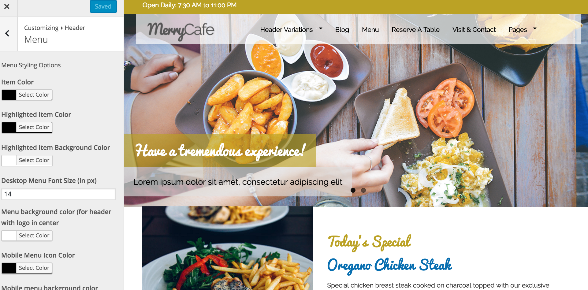
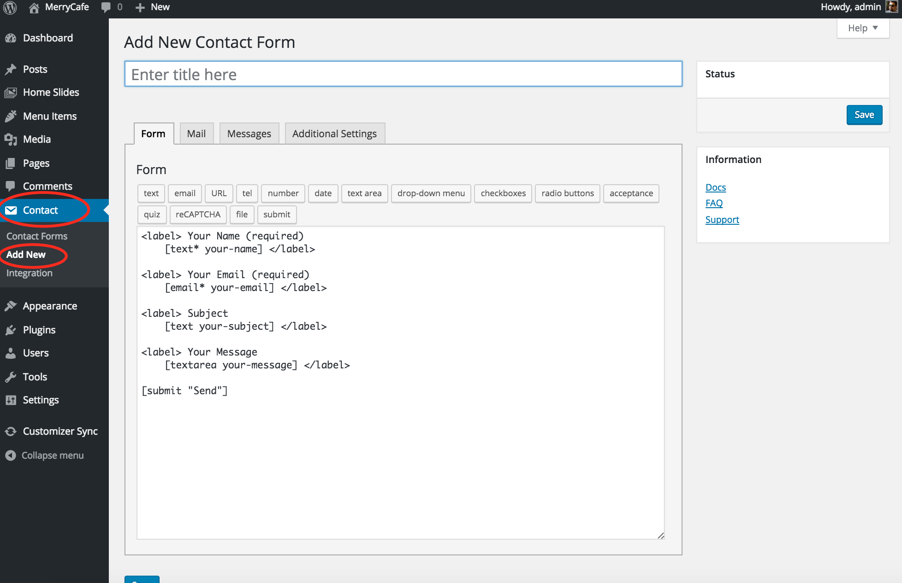

Thank you for purchasing MerryCafe. Welcome to this documentation that explains briefly how this theme works. We constantly work on improving this theme and update this documentation as well. Here are few things we want you to know first:
Support
After reading the documentation, if there is still something you need to ask, please go to our Support Site and create a thread in the forum.
Our support covers all queries related to this theme except customization requests and any problems related to third party plugins.
We hope you will enjoy going through this documentation.
Find the "MerryCafe.zip" you got from your ThemeForest downloads.
Go to Appearance > Themes from your WordPress Dashboard.
Click Add New and then click Upload Theme.
Browser for MerryCafe.zip file and click Install Now.
When upload is complete, activate the theme.
Installing The Required Plugins
Once you go back to the dashboard after installing the plugin, you will be prompted to install the required plugins. Theses plugins are required to make the theme work similar to the demo.
Install plugins prompt
Click Begin Installing Plugins and follow the instructions to install the plugins. Once you install them, you need to active them. Follow instructions in the following screenshots:
Installing Child Theme
We will recommend you to install the Child Theme before you start creating your website with our theme. Read Why use a child theme to know more about Child Themes
Child Theme is inside with your downloaded folder from Theme Forest. Look for MerryCafe-Child.zip and install/activate it.
Importing Demo
Once you install the theme, you can see there is no content to experience the awesomeness. A good way to start modifying your theme is by importing one of the Demo Sites in your theme installation. Here is how you can do that:
Demo import files are inside the "Demos" folder in your downloaded Theme Forest folder (Make sure you downloaded "All Files" from your Theme Forest download section). Open a demo folder of your choice and you will find two files in each folder. One is a .xml file and other is a .txt file. Both contain data that is required to make the import work.
In your WordPress dashboard, Go to Tools > Import and follow the instructions in the screenshow below to first import the contents via .xml file.
Once you are done with importing the contents via .xml file, you need to import the customizer content. Open the customizer.txt file and copy the content inside it.
Go to Customizer Sync from your WordPress dashboard and replace the content of the text area with your copied content. Check the Check this to approve the update. checkbox and click "Update Customizer Options".
Now, you need to set the homepage. Go to Settings > Reading and under Front Page Displays, choose A static page (select below) and choose the Home page from the dropdown. Click Save Changes
There you go. Check your site and enjoy the shining look.
Header Setup
You can access the header options through customizer by going to Appearance > Customizer and the going to Header
Logo
You can add the logo through the customizer by going to Appearance > Customizer and then clicking the Logo section. You can just upload a regular logo in the Logo option or you can add a logo for high resolution displays in the Retina display logo option. Make sure to define your logo width in the Retina logo width in px option if you add a retina logo or else your logo will look oddly sized.
Favicon
You can add a favicon for your site by opening the customizer through Appearance > Customizer and then clicking the Favicon section. You can upload a favicon (Recommended size is 128px X 128px) with the favicon option.
Top Header
You can access the options for Top Header section by opening the customizer through Appearance > Customizer and then clicking the Top Header section. There you can see various customization options for your site's top header.
Primary Header
You can access the options for Primary Header section by opening the customizer through Appearance > Customizer and then clicking the Header > Primary Header section. There you can see various customization options for your site's primary header.
Navigation Menu
You can access the options for Menu section by opening the customizer through Appearance > Customizer and then clicking the Menu section. There you can see various customization options for your site's navigation menu.

Home Page Template
Home Page Template is a template you can use to create the home page layout as you can see in the screenshot below:
To add home template to any page, follow the instructions in the screenshot below:
Follow the instructions below to customize the home page template sections.
Above The Fold
Above the fold section is the top section on your site's home page. You can access the options for Above The fold section by opening the customizer through Appearance > Customizer and then clicking on the Above The Fold section. There you can see various customization options for your site's above the fold section
Screenshot of Above the fold section
Home Slider
Home Slider is a slider bundled with the theme to show slides on the Home Page Template
To add slides to the Home Slider, go to Home Slider from your WordPress dashboard as you can see in the screenshot below:
Open customizer by going to Appearance > Customizer and then go to Home > Above The Fold to see the options for enabling the slider.
Featured Section
You can access the options for Featured section by opening the customizer through Appearance > Customizer and then clicking on Featured Section
Recommended Section
You can access the options for Recommended section by opening the customizer through Appearance > Customizer and then clicking on Recommended Section
Content Boxes Section
You can access the options for Content Boxes section by opening the customizer through Appearance > Customizer and then clicking on Content Boxes Section
Event Section
You can access the options for Event section by opening the customizer through Appearance > Customizer and then clicking on Event Section
Page Content
If you want to add more content on the homepage, you can add it through the WordPress page editor. You can enable/disable this section from the customizer. You can access the options for Page Content section by opening the customizer through Appearance > Customizer and then clicking on Page content
Food Menu
MerryCafe offers a beautiful template and post type to show your cafe's/restaurant's menu.
Adding food menu items
You can add food menu items by going to Menu Items from your WordPress Dashboard. The menu is shown category wise. Before adding any menu items, go to Menu Items > Menu Categories and add your menu categories
Once you add menu categories, Add menu items by clicking Menu Items > Add New. Make sure you add the already created Menu Category to the menu item.
It is important that you add atleast one Menu Image to any of the Menu Item falling under a specific Menu Category to comply the standards of menu template design.
Creating the menu page
To show menu on any page, edit that page and choose the Menu template as you can see in the screenshot below:
Styling the menu
You can access the styling options for Food Menu by opening the customizer through Appearance > Customizer and then clicking on Food Menu section.
Blog
Blog is visible through the default index page or you can configure it to show on any page by choosing the Blog Template. To show Blog on any page, edit that page and choose the Blog template as you can see in the screenshot below:
Styling the blog
You can access the styling options for Blog by opening the customizer through Appearance > Customizer and then clicking on Posts section.
Pages
You can access the styling options for Pages by opening the customizer through Appearance > Customizer and then clicking on Pages section.
Page Title Bar Image
When creating a page, you can choose it's title image by choosing a Page Title Featured Image
Contact Page
Contact Page template offers a two column layout to show a contact form and some other content besides it.
To enable Contact Page Layout on any page, edit that page and choose the Contact template as you can see in the screenshot below:
Embedding the contact form
We use Contact Form 7 plugin to embed the contact forms. To add contact form in your Contact Page, create a form by going to Contact from your WordPress Dashboard and follow the instructions as stated in these screenshots:

Once you create a contact form, copy it's shorcode as pointed out in this screenshot:
Open the customizer through Appearance > Customizer and then clicking on Contact and paste your shortcode in the Contact Form 7 Shortcode option. Click Save & Publish
Reservation Form
You can embed a reservation form on any page via Contact Form 7 plugin.
To add a reservation form on any page, create a form by going to Contact from your WordPress Dashboard and follow the instructions as stated in these screenshots:
Once you create a contact form, copy it's shorcode as pointed out in this screenshot:
Edit the page where you want to insert this form and paste the shortcode. Save and publish your page
Typography
MerryCafe offers 100s of Google Fonts that you can use for your sites. To choose fonts for your site, open customizer by going to Appearance > Customizer and then go to Typography section.
Form Styles
You can stylize your form fields with MerryCafe's customizer options. Open customizer by going to Appearance > Customizer and then go to Form Styles section.
Defaults
You can set default styles for your theme with this section. Open customizer by going to Appearance > Customizer and then go to Defaults section to modify the default options.
Default Colors
The Primary and Secondry colors you set in the Defaults section of Appearance > Customizer do not replace all the colors in customizer imediately. Instead, they only change the 'default' values of those colors. See the following screenshot for reference:
Footer
Footer styles and options can be modified inside the Footer section of Appearance > Customizer
Footer Widgets
The Footer 1, Footer 2 and Footer 3 sidebars in Appearance > Widgets are the three columns in the footer area. You can drag/drop widgets here.